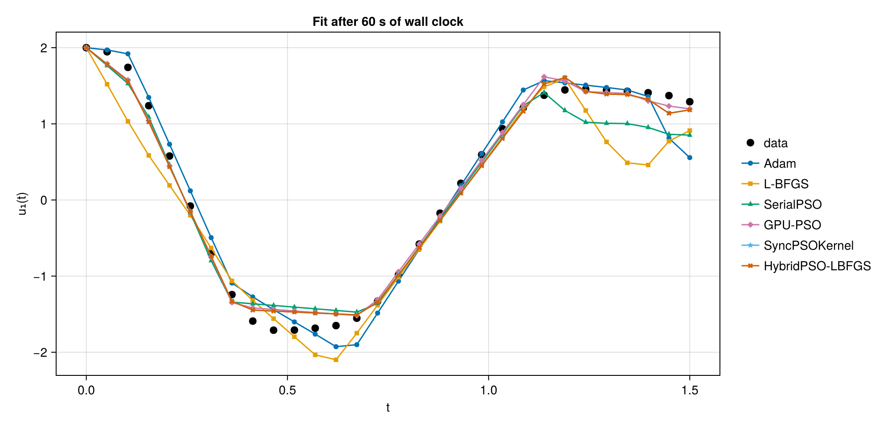
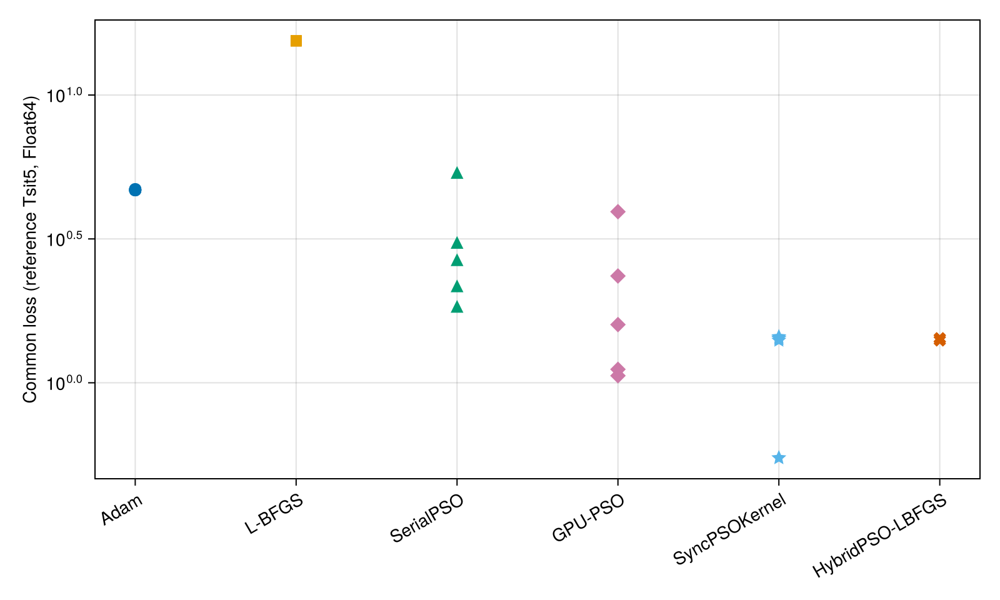

Neural ODE Parameter Estimation with GPU-PSO
A 12-parameter SimpleChains network is fit to spiral ODE data (30 points on (0, 1.5)) so that the neural ODE du/dt = NN(u, θ) reproduces the data. The problem is the neural ODE experiment (Section 3.2) of the ParallelParticleSwarms.jl workshop paper (ParallelParticleSwarms.jl#76), extended with the library's other PSO variants and compared at equal wall-clock time.
Six optimizers:
- Gradient-based:
AdamandLBFGS, trained through the ODE solve withQuadratureAdjoint. - PSO:
SerialPSOon the CPU; GPU-PSO throughparameter_estim_ode!(all particles' ODEs solved as one GPU ensemble);SyncPSOKernelandHybridPSO-LBFGSon a fixed-step RK4 loss that runs inside the GPU kernels. The last two share loss and swarm, so their difference isolates the L-BFGS polish.
Protocol
Every optimizer gets the same wall-clock budget, BUDGET seconds, enforced against the clock: Adam and L-BFGS stop through a callback, the GPU swarms are advanced in chunks with the best cost read back between chunks, and HybridPSO reserves its measured polish time out of the budget. SerialPSO has no resumable cache, so its iteration count is calibrated from a timed run instead. An optimizer that converges early keeps its early result.
Each optimizer runs from length(SEEDS) fresh starts. The table reports, per optimizer:
- Common loss (median, best, worst over seeds): the returned parameters re-evaluated under one reference loss,
Tsit5inFloat64atabstol = reltol = 1e-10. This is the only column that ranks optimizers. - Own objective of the median run: the optimizer's own solver at the parameters it returned. Every optimizer scores candidates with some ODE solver, and a swarm will exploit that solver's error if it can. The gap to the common loss is checked after the runs.
- Iterations completed and evaluations (ODE solves) performed, and the median time.
All GPU swarms use 10,000 particles; SerialPSO uses 512. HybridPSO is built on the same SyncPSOKernel swarm, so its row is that swarm plus an L-BFGS polish of every particle, and the difference between the two rows is what the polish adds.
Setup
using Random; Random.seed!(0)
using SimpleChains, StaticArrays, OrdinaryDiffEq, SciMLSensitivity
using Optimization, OptimizationOptimisers, OptimizationOptimJL, Optimisers
using ParallelParticleSwarms, DiffEqGPU, CUDA, KernelAbstractions, Adapt
using Statistics, Printf, CairoMakie
CairoMakie.activate!()
const SciMLBase = Optimization.SciMLBase
const BACKEND = CUDABackend()
CUDA.allowscalar(false)
println("GPU: ", CUDA.name(CUDA.device()))
const NPARAMS = 12
const DATASIZE = 30
const BOX = 10.0f0
const BUDGET = 60.0 # seconds per optimizer per run
const SEEDS = 1:5
const NPART_GPU = 10_000 # GPU-PSO, SyncPSOKernel, HybridPSO-LBFGS
const NPART_CPU = 512 # SerialPSO
const CHUNK_KERNEL = 50 # kernel-PSO iterations between clock checks
const CHUNK_GPUPSO = 1 # GPU-PSO iterations between clock checks
const CAL_ITERS = 10 # SerialPSO calibration run
const LOCAL_MAXITERS = 10 # Hybrid L-BFGS iterations per particleGPU: Tesla V100-PCIE-32GB
10Problem
const U0 = @SVector Float32[2.0, 0.0]
const TSPAN = (0.0f0, 1.5f0)
tsteps = range(TSPAN[1], TSPAN[2], length = DATASIZE)
trueODE(u, p, t) = (((u .^ 3)' * @SMatrix Float32[-0.1 2.0; -2.0 -0.1])')
data = Array(solve(ODEProblem(trueODE, U0, TSPAN), Tsit5(), saveat = tsteps))
sc = SimpleChain(static(2), Activation(x -> x .^ 3),
TurboDense{true}(tanh, static(2)), TurboDense{true}(identity, static(2)))
p_nn = Vector{Float32}(SimpleChains.init_params(sc; rng = Random.default_rng()))
p_static = SVector{NPARAMS, Float32}(p_nn...)
# Hand-written forward for the GPU paths and the reference: SimpleChains emits CPU
# intrinsics that do not lower to PTX.
function mlp(u, θ)
v = u .^ 3
h1 = tanh(θ[1] * v[1] + θ[3] * v[2] + θ[5])
h2 = tanh(θ[2] * v[1] + θ[4] * v[2] + θ[6])
typeof(v)(θ[7] * h1 + θ[9] * h2 + θ[11], θ[8] * h1 + θ[10] * h2 + θ[12])
end
for _ in 1:8
u = @SVector rand(Float32, 2)
@assert sc(u, p_static) ≈ mlp(u, p_static)
end
# Training loss (Adam, L-BFGS, SerialPSO): adaptive Tsit5 in Float32, same tolerances as GPU-PSO.
nn_ode(u, p, t) = convert(typeof(u), sc(u, p))
sprob_nn = ODEProblem(nn_ode, U0, TSPAN)
predict(p) = Array(solve(sprob_nn, Tsit5(); p, saveat = tsteps, abstol = 1.0f-6, reltol = 1.0f-5,
sensealg = QuadratureAdjoint(autojacvec = ZygoteVJP())))
loss_tsit5(p) = sum(abs2, data .- predict(p))
asvec(u) = u isa AbstractVector ? u : u[]
# Reference loss: Float64, tight tolerances. Scores only; nothing trains on it.
const DATA64 = Float64.(data)
const TSTEPS64 = Float64.(tsteps)
ref_ode(u, p, t) = mlp(u, p)
ref_prob = ODEProblem{false}(ref_ode, Float64.(U0), Float64.(TSPAN), SVector{NPARAMS, Float64}(p_nn...))
function ref_solve(u)
p = SVector{NPARAMS, Float64}(Float64.(asvec(u))...)
Array(solve(ref_prob, Tsit5(); p, saveat = TSTEPS64, abstol = 1e-10, reltol = 1e-10))
end
common(u) = sum(abs2, DATA64 .- ref_solve(u))
lb_s = @SVector fill(-BOX, NPARAMS)
ub_s = @SVector fill(BOX, NPARAMS)
@printf "Training loss at start: %.4f Reference loss at start: %.4f\n" loss_tsit5(p_static) common(p_static)Training loss at start: 164.2561 Reference loss at start: 164.2560Optimizers
Every runner takes a deadline and returns (; u, own, iters, evals).
Gradient-based
optf = OptimizationFunction((x, p) -> loss_tsit5(x), Optimization.AutoZygote())
optprob = OptimizationProblem(optf, p_nn)
moptprob = OptimizationProblem(optf, MArray{Tuple{NPARAMS}}(p_nn...))
function run_gradient(prob, opt, deadline; evals)
n = Ref(0)
cb = (state, l) -> (n[] += 1; time() >= deadline)
sol = solve(prob, opt; maxiters = 10^7, callback = cb)
u = asvec(sol.u)
(; u, own = Float64(loss_tsit5(u)), iters = n[], evals = evals(sol, n[]))
end
run_adam(deadline) = run_gradient(optprob, Adam(0.05), deadline; evals = (sol, n) -> n)
run_lbfgs(deadline) = run_gradient(moptprob, LBFGS(), deadline; evals = (sol, n) -> sol.original.f_calls)run_lbfgs (generic function with 1 method)SerialPSO
const NEVALS = Ref(0)
counted_loss(x, p) = (NEVALS[] += 1; loss_tsit5(x))
s_prob = OptimizationProblem{false}(OptimizationFunction{false}(counted_loss, SciMLBase.NoAD()),
p_static, nothing; lb = lb_s, ub = ub_s)
serial_solve(m) = solve(s_prob, ParallelParticleSwarms.SerialPSO(NPART_CPU); maxiters = m)
const SERIAL_ITERS = Ref(1) # set in warm-up
function run_serial(deadline)
NEVALS[] = 0
sol = serial_solve(SERIAL_ITERS[])
(; u = asvec(sol.u), own = Float64(first(sol.objective)), iters = SERIAL_ITERS[], evals = NEVALS[])
endrun_serial (generic function with 1 method)GPU-PSO through parameter_estim_ode! (the paper's method)
Each iteration solves all particles' ODEs as one GPU ensemble (adaptive GPUTsit5) and reduces the loss on device.
nn_fn(u, p, t) = mlp(u, p)
prob_nn = ODEProblem{false}(nn_fn, U0, TSPAN, p_static)
soptprob = OptimizationProblem((u, p) -> eltype(u)(Inf), p_static, nothing; lb = lb_s, ub = ub_s) # box only
gpu_data = adapt(BACKEND, [SVector{2, Float32}(@view data[:, i]) for i in 1:DATASIZE])
improb = DiffEqGPU.make_prob_compatible(prob_nn)
prob_func(prob, particle) = remake(prob, p = particle.position)
function make_cache()
gbest, particles = ParallelParticleSwarms.init_particles(
soptprob, ParallelParticleSwarms.ParallelPSOKernel(NPART_GPU), typeof(p_static))
(; losses = adapt(BACKEND, ones(Float32, NPART_GPU)), gpu_particles = adapt(BACKEND, particles),
gpu_data, gbest, probs = adapt(BACKEND, fill(improb, NPART_GPU)))
end
function run_gpupso(deadline)
cache, iters = make_cache(), 0
gbest = cache.gbest
while time() < deadline
gbest = ParallelParticleSwarms.parameter_estim_ode!(prob_nn, cache, lb_s, ub_s, Val(true);
saveat = tsteps, dt = 0.01f0, abstol = 1.0f-6, reltol = 1.0f-5, maxiters = CHUNK_GPUPSO, prob_func)
cache = (; cache..., gbest)
iters += CHUNK_GPUPSO
end
(; u = gbest.position, own = Float64(gbest.cost), iters, evals = iters * NPART_GPU)
endrun_gpupso (generic function with 1 method)SyncPSOKernel and HybridPSO-LBFGS on a kernel-compatible loss
These evaluate the objective inside GPU kernels, so the ODE solve is a fixed-step RK4 with NSUB substeps per data interval. Fixed-step error grows with |θ| and a swarm will exploit it, so NSUB is set high and the agreement check after the runs validates it. HybridPSO polishes every particle with L-BFGS after the swarm.
@inline function rk4(u, θ, h)
k1 = mlp(u, θ); k2 = mlp(u .+ h / 2 .* k1, θ)
k3 = mlp(u .+ h / 2 .* k2, θ); k4 = mlp(u .+ h .* k3, θ)
u .+ h / 6 .* (k1 .+ 2 .* k2 .+ 2 .* k3 .+ k4)
end
const NSUB = 32
struct RK4Loss{U, D, T} # constants live here; `p = nothing` is required by the in-kernel L-BFGS
u0::U; data::D; h::T
end
function (l::RK4Loss)(θ, p)
u = SVector{2, eltype(θ)}(l.u0)
loss = sum(abs2, u .- l.data[1])
for i in 2:DATASIZE
for _ in 1:NSUB; u = rk4(u, θ, l.h); end
loss += sum(abs2, u .- l.data[i])
end
loss
end
loss_rk4 = RK4Loss(U0, ntuple(i -> SVector{2, Float32}(data[:, i]), DATASIZE), Float32(step(tsteps)) / NSUB)
k_prob = OptimizationProblem{false}(OptimizationFunction{false}(loss_rk4, SciMLBase.NoAD()),
p_static, nothing; lb = lb_s, ub = ub_s)
sync_opt = ParallelParticleSwarms.ParallelSyncPSOKernel(NPART_GPU; backend = BACKEND)
hybrid_opt = ParallelParticleSwarms.HybridPSO(; backend = BACKEND, pso = sync_opt)
function chunked!(cache, deadline) # advance a kernel-PSO cache until the deadline
iters, sol = 0, nothing
while time() < deadline
sol = SciMLBase.solve!(cache; maxiters = CHUNK_KERNEL)
cache.gbest = ParallelParticleSwarms.SPSOGBest(sol.u, first(sol.objective))
iters += CHUNK_KERNEL
end
sol, iters
end
result(sol, iters, evals) = (; u = asvec(sol.u), own = Float64(first(sol.objective)), iters, evals)
function run_sync(deadline)
sol, iters = chunked!(SciMLBase.init(k_prob, sync_opt), deadline)
result(sol, iters, iters * NPART_GPU)
end
polish(cache) = SciMLBase.solve!(cache; maxiters = 0, local_maxiters = LOCAL_MAXITERS, abstol = 1.0f-8, reltol = 1.0f-8)
const POLISH_TIME = Ref(0.0) # set in warm-up
function run_hybrid(deadline)
cache = SciMLBase.init(k_prob, hybrid_opt)
_, iters = chunked!(cache.pso_cache, deadline - POLISH_TIME[])
result(polish(cache), iters, missing)
endrun_hybrid (generic function with 1 method)Runs
One warm-up per optimizer absorbs compilation; for HybridPSO it runs a full-budget swarm and times the polish on it, for SerialPSO it calibrates the iteration count. Each seed then gets one run against the budget; the recorded solution is the median-loss run.
results = Dict{String, Any}()
function warmup!(name, run)
Random.seed!(0)
if name == "HybridPSO-LBFGS"
cache = SciMLBase.init(k_prob, hybrid_opt)
chunked!(cache.pso_cache, time() + BUDGET) # full-length swarm, as in the real runs
polish(cache)
POLISH_TIME[] = @elapsed polish(cache)
elseif name == "SerialPSO"
serial_solve(CAL_ITERS)
t = @elapsed serial_solve(CAL_ITERS)
m = max(1, round(Int, BUDGET / (t / CAL_ITERS)))
t = @elapsed serial_solve(m)
SERIAL_ITERS[] = max(1, round(Int, m * BUDGET / t))
else
run(time() + 2.0)
end
end
function record!(name, run)
warmup!(name, run)
rs, losses, times = [], Float64[], Float64[]
for s in SEEDS
Random.seed!(s)
t = @elapsed r = run(time() + BUDGET)
push!(rs, r); push!(losses, common(r.u)); push!(times, t)
end
i = sortperm(losses)[(length(losses) + 1) ÷ 2]
results[name] = (; rs[i]..., losses, time = median(times))
end
record!("Adam", run_adam)
record!("L-BFGS", run_lbfgs)
record!("SerialPSO", run_serial)
record!("GPU-PSO", run_gpupso)
record!("SyncPSOKernel", run_sync)
record!("HybridPSO-LBFGS", run_hybrid)
nothingResults
const ORDER = ["Adam", "L-BFGS", "SerialPSO", "GPU-PSO", "SyncPSOKernel", "HybridPSO-LBFGS"]
@printf "budget per run: %.0f s, %d seeds; particles: GPU %d, Serial %d\n\n" BUDGET length(SEEDS) NPART_GPU NPART_CPU
println(rpad("optimizer", 16), lpad("median", 9), lpad("best", 9), lpad("worst", 9),
lpad("own", 9), lpad("iters", 7), lpad("evals", 10), lpad("time(s)", 8))
for name in ORDER
r = results[name]
ev = ismissing(r.evals) ? "n/a" : string(r.evals)
@printf "%-16s%9.4f%9.4f%9.4f%9.4f%7d%10s%8.1f\n" name median(r.losses) minimum(r.losses) maximum(r.losses) r.own r.iters ev r.time
endbudget per run: 60 s, 5 seeds; particles: GPU 10000, Serial 512
optimizer median best worst own iters evals time(
s)
Adam 4.6750 4.6712 4.7060 4.6731 1442 1442 60
.0
L-BFGS 15.4291 15.4291 15.4291 15.4291 159 444 42
.4
SerialPSO 2.6325 1.8125 5.2911 2.6323 119 61443 57
.8
GPU-PSO 1.5930 1.0584 3.9316 1.4096 118 1180000 60
.6
SyncPSOKernel 1.4267 0.5482 1.4444 1.4266 59700 597000000 60
.0
HybridPSO-LBFGS 1.4267 1.4041 1.4267 1.4266 56400 n/a 60
.0Integrator agreement
Own objective vs. reference loss at the median run's returned parameters. A gap above 10% means the optimizer was minimizing solver error rather than the ODE fit.
const GAP_TOL = 0.10
println(rpad("optimizer", 18), lpad("own", 12), lpad("reference", 12), lpad("rel. gap", 10))
for name in ORDER
r = results[name]
ref = common(r.u)
gap = abs(r.own - ref) / ref
@printf "%-18s%12.4f%12.4f%9.1f%%%s\n" name r.own ref 100gap (gap > GAP_TOL ? " <-- exceeds tolerance" : "")
endoptimizer own reference rel. gap
Adam 4.6731 4.6750 0.0%
L-BFGS 15.4291 15.4291 0.0%
SerialPSO 2.6323 2.6325 0.0%
GPU-PSO 1.4096 1.5930 11.5% <-- exceeds toleranc
e
SyncPSOKernel 1.4266 1.4267 0.0%
HybridPSO-LBFGS 1.4266 1.4267 0.0%Fitted trajectories
fig = Figure(size = (1000, 480))
ax = Axis(fig[1, 1]; xlabel = "t", ylabel = "u₁(t)", title = @sprintf("Fit after %.0f s of wall clock", BUDGET))
scatter!(ax, tsteps, data[1, :]; label = "data", color = :black, markersize = 12)
markers = [:circle, :rect, :utriangle, :diamond, :star5, :xcross]
for (i, name) in enumerate(ORDER)
scatterlines!(ax, tsteps, ref_solve(results[name].u)[1, :]; label = name,
marker = markers[i], markersize = 8, linewidth = 1.5)
end
Legend(fig[1, 2], ax; framevisible = false)
fig
Common loss across seeds
fig = Figure(size = (800, 480))
ax = Axis(fig[1, 1]; yscale = log10, ylabel = "Common loss (reference Tsit5, Float64)",
xticks = (1:length(ORDER), ORDER), xticklabelrotation = pi / 6)
for (i, name) in enumerate(ORDER)
l = results[name].losses
scatter!(ax, fill(i, length(l)), max.(l, 1e-8); marker = markers[i], markersize = 14)
end
fig